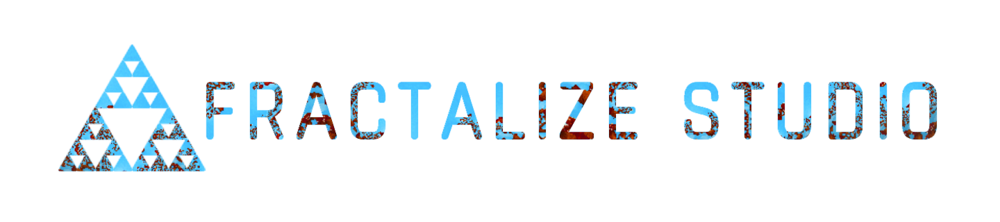

① Enable live audio input for music-reactive mode.
② Play music over speakers, or use a program like VB-CABLE to route input directly.
➁ Pick your image

Turn any photo into a living, music-reactive fractal.
➀ Check your audio settings
① Enable live audio input for music-reactive mode.
② Play music over speakers, or use a program like VB-CABLE to route input directly.
➁ Pick your image